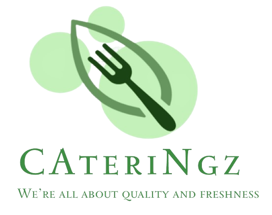
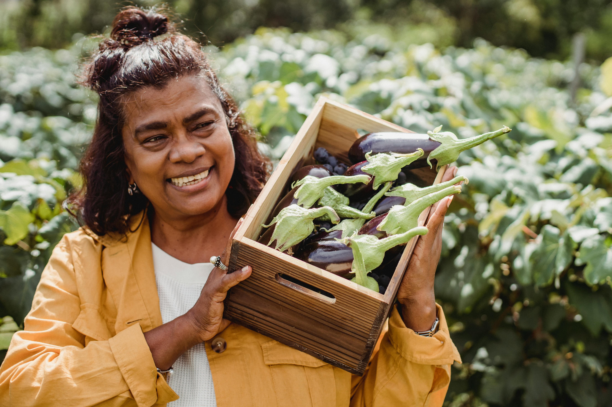

Discover the story behind CAteriNgz and our commitment to quality and sustainability.
CAteriNgz is a homemade culinary that has become a go-to for great food at events in Jakarta, Bandung, and Malang. Our journey began in a small kitchen, and now we're known for creating delicious experiences at all kinds of gatherings. We're all about using the best ingredients. We get our stuff locally and use seasonal items to keep things fresh and sustainable. Our chefs work with local farmers and artisans to bring out the best flavors in every dish.


At CAteriNgz, our mission is to deliver fresh, delicious, and high-quality catering solutions that exceed our customers' expectations. We aim to provide exceptional service and create memorable dining experiences for every occasion.
We envision becoming the go-to catering service for both corporate and private events, known for our innovative menus, sustainable practices, and commitment to customer satisfaction. Our goal is to set the standard for excellence in the catering industry.
At CAteriNgz, we are dedicated to using the freshest ingredients to ensure delicious and nutritious meals, while never compromising on quality. Our commitment to customer satisfaction drives us to provide exceptional service from inquiry to delivery, ensuring a seamless and enjoyable experience. We continuously innovate our menu to incorporate the latest culinary trends and cater to all dietary preferences.
Sustainability is at the heart of our operations, as we utilize eco-friendly practices, such as sustainable packaging and sourcing local and organic ingredients.